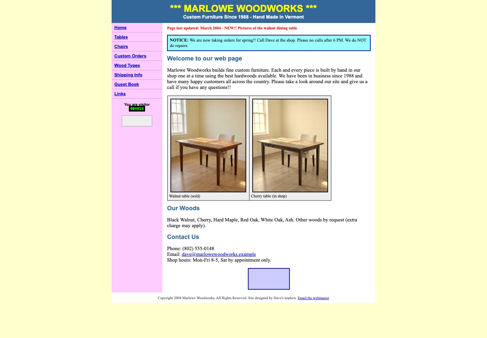
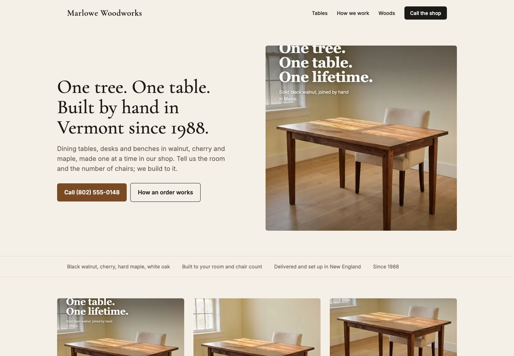
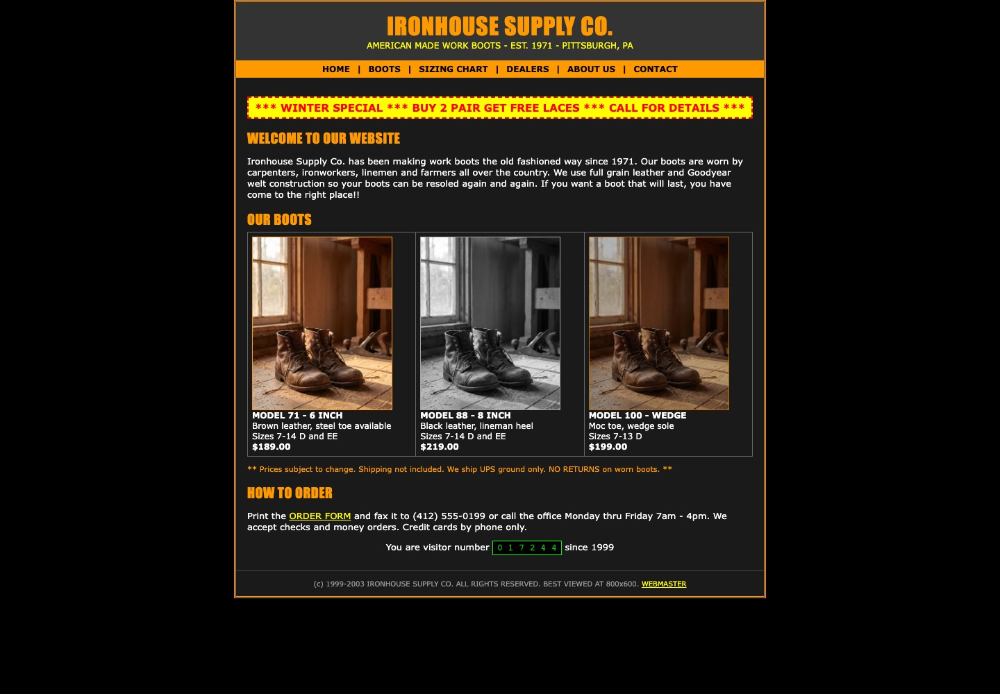
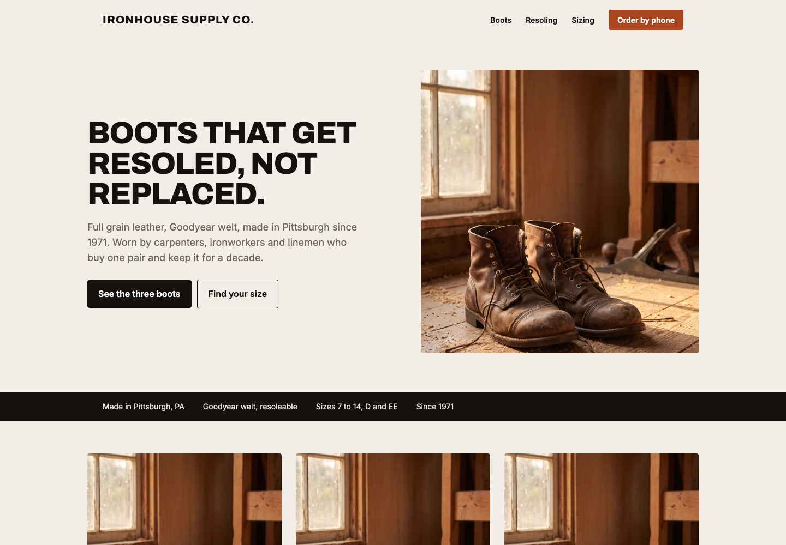

QuietA considered storefront.
Websites with a point of view
Same business.
Different personalities.
One outdoor brand. Three distinct directions.
Explore the layouts and find what feels like you.
Room to breathe. Beautiful products. Nothing in the way.NORTHBOUND · Fictional sample brand
BoldA confident campaign.
ExpressiveA world you want to enter.
Start with QuietA starting point, tailored to your brand.
02Rebuilds
A site from 2004, and the page it becomes.
Most of the manufacturers we talk to have a site like the old one in the frame. Drag the slider. These two are samples, built to show the move: same business, same products, same phone number, one page that works on a phone.
Sample 1 of 2 · Furniture · Sample brand
Marlowe Woodworks
A furniture maker with a guest book, a hit counter and a page last updated in 2004. The sample rebuild keeps the photos and the phone number, and drops everything else.


Before
After
Drag the slider: all the way left is the old site, all the way right is the rebuild.
Sample 2 of 2 · Boots · Sample brand
Ironhouse Supply Co.
A boot maker on a black page with an orange border and a fax number. The rebuild leads with the one thing they do that nobody else does: resoling.


Before
After
Drag the slider: all the way left is the old site, all the way right is the rebuild.
03How a rebuild works
Send the address of your site. That is the brief.
Share your current site and what you want to improve. We’ll agree on the scope, price and timeline before work begins.
Step 01 · Send
Your current site and a few photos
The address of the site you have now, and whatever product photos you have, phone shots included.
Step 02 · Draft
A draft built around your business
Your products and your message, shaped into a clear page that works on a phone. We review the direction together before launch.
Step 03 · Live
Your domain, live, changes until it is right
The new site goes up on the address you already own. We host it or hand it to whoever you like. One price, agreed up front.
04Start
Send your site's address.
Two minutes on one page is enough. You get a quote and a turnaround back before anything is committed.
Rather email
consult@feedworkstudio.com
Rather call
+1 972-742-2543